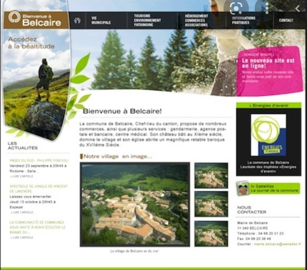
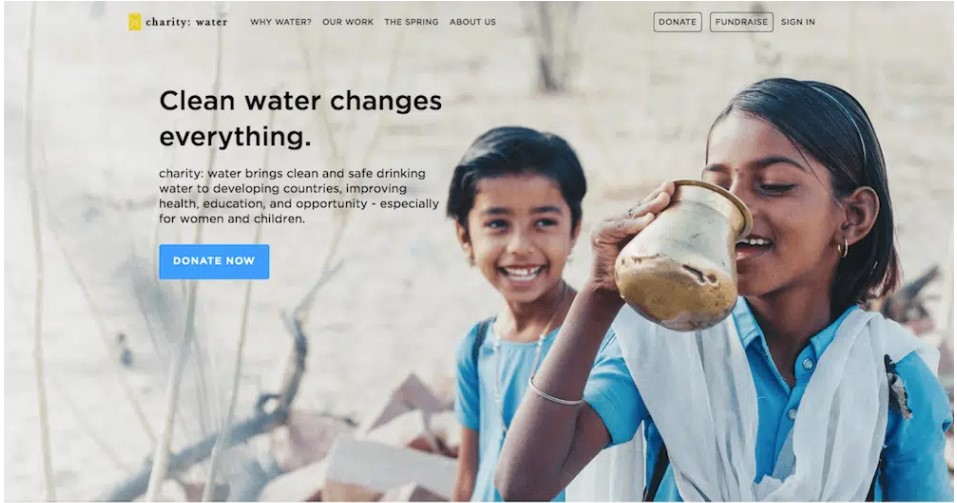

Je peux développer un site web complet du back au front office en utilisant :
HTML
CSS
JS
Voici quelques exemples des sites web que j'ai developpé :
Site 1
Site 2

Site 1

>
retour a la page principale